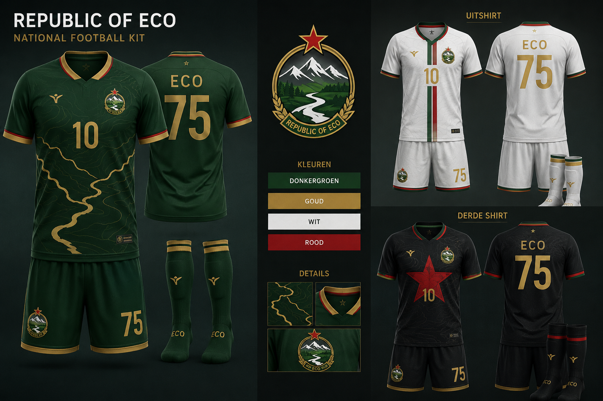
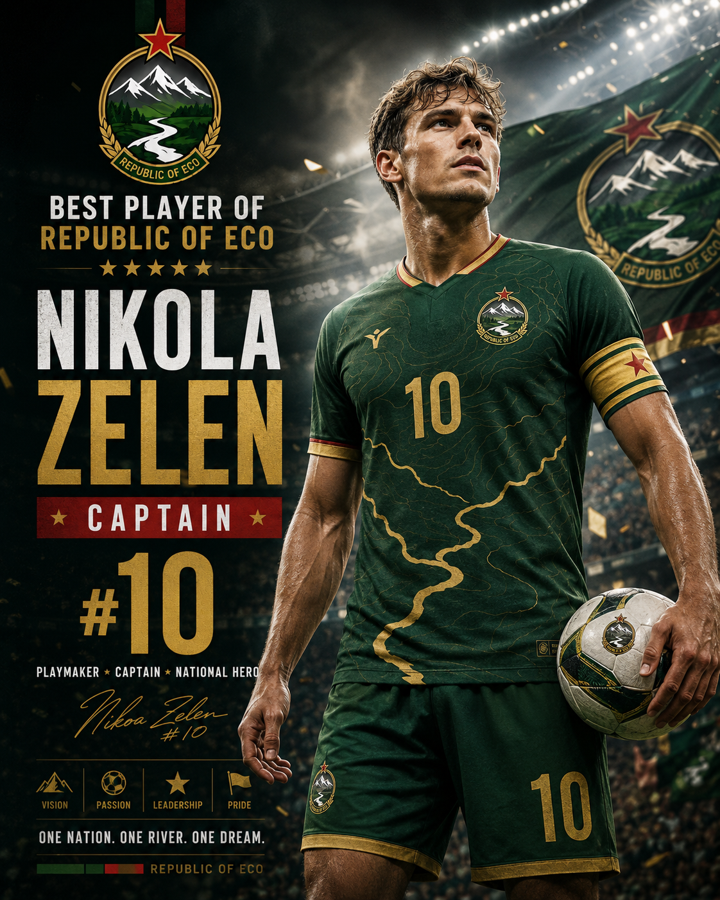

National Team
Republic of ECO Football
One Nation. One River. One Dream.
Official Kit
The home kit is dark green with gold river lines, red accents and the national crest. The away kit is white and the third kit is dark/black for power matches.


Best Player: Nikola Zelen
Captain, number 10 and national hero. A creative playmaker from Zelenograd, known for leadership, vision and big-match goals.